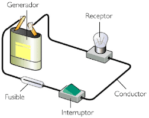
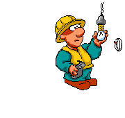

un circuito electrico es un conjunto de elementos conestados entre si por los que pueden circular una corriente electrica
Tipos De Operadores Eléctricos
- Son los que trabajan con electricidad son donde aparecen enchufes , como lavadoras , televisores , computadores , etc .
- Los que trabajan con pilas esas funcionan con baterías o pilas muchos de ellos se puede conectar a la red eléctrica para economizar muchos artefactos como teléfonos, celulares , tables etc , utilizan pilas recargables .
Componentes De Un Sistema Eléctrico :
Interruptor : Permite manipular el poso de la corriente.
Generador : genera energía eléctrica como el cargador de pilas de cargadores .
Conector : Permite una correcta coneccion como el cable eléctrico
Receptor : Transforma la energía eléctrica como el ventilador , plancha .
Fusible : Se Encarga de reservar la instalación ante el riesgo .
Cálculos En Los Circuitos Eléctricos :
Intensidad :
También Dominada Intensidad es el flujo de electrones libres atraves de un conductor o semiconductor en un sentido . La unidad de medida de este parámetro es el imperio (A) .
Ley De Ohm
Es Básicamente La Resistencia Eléctrica Es Un Circuito Es Muy Importante , Para Determinar La Intensidad Del Flujo De Electrones , se habla descubierto hace tiempo que a la igualdad de otras circunstancias , es un incremento en la resistencia de un circuito se acompaña por una disminución de la corriente .
Potencia Eléctrica :
Es la velocidad a las que se consume la energía también se puede definir potencia como la energía desarrollada o consumida en una unidad de tipo expresada en la formula .
Calculo De Potencias : Consume un dispositivo conectado en un circuito eléctrico que se multiplica el valor de la tensión el volt (v) .
Se aplica el valor de la intensidad ( I) de la corriente que lo recorre .
Corriente Frotamiento :
Esta carga pasa cuando se trata de un cuerpo negativo con un positivo
La Electricidad :
Es un método que produce corriente por la cual las personas tenemos luz , energía y no va en lo material si no también en lo corporal por medio de la electricidad podemos hacer muchas cosas para vivir y conocer cosas .
Comportamientos Digitales :
1 Respeto utilizo las tic respetando a los otros como respetándome y asiéndome respetar
2 Libertad ejerzo mi derecho a la libertad y respeto a la de los demás
3 Identidad hago uso de mi identidad de manera segura en mi interacción con otros en los ambientes tecnológicos.
Circuitos
Es el programa en el que desarrollamos nuestras mentes consiste en el que podemos hacer cálculos con la ley de ohm para ser un buen circuito electrónicos para ver los ohmios y poder hacer los ejercicios ya se para sacar el voltaje la intensidad la resistencia o la potencia o ya sea el que nos indique cual de los 4 podemos hacer
Prefijos Del Sistema Internacional
Nos sirven para hacer circuitos ya sea cambiando el numero del voltaje o para sacar el micro o el mili y hacíamos la convercion